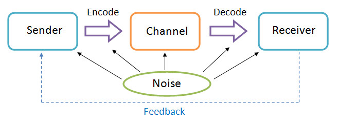

Digitalization
Two crucial parts that must exist in an electronic product so that it is called a mobile phone are small-sized microphone and speaker. These two are respectively speech encoders (basically in waveform, source or hybrid) and decoders. Besides, they are also called codecs. Microphone takes and converts normal sound signal (mainly speech) into digital form while speaker receives the encoded data and turns them back to sound for users. The eventual sound reversed from digital data could be perfectly close to the original one as long as there are no influences during the transmission process. In fact, however, encoders usually carry “quantization noise” effect (root “quant-” means amount, thus the term likely means duplicating the elements of a being encoded sound signal and eventually causing distortion).
There are two common waveform codecs: pulse code modulation (PCM) for simple and acceptable sound quality and differential pulse code modulation (DPCM) for premium sound quality. This communicative mechanism is actually quite simple and not pricey. (Steele, 1992)
